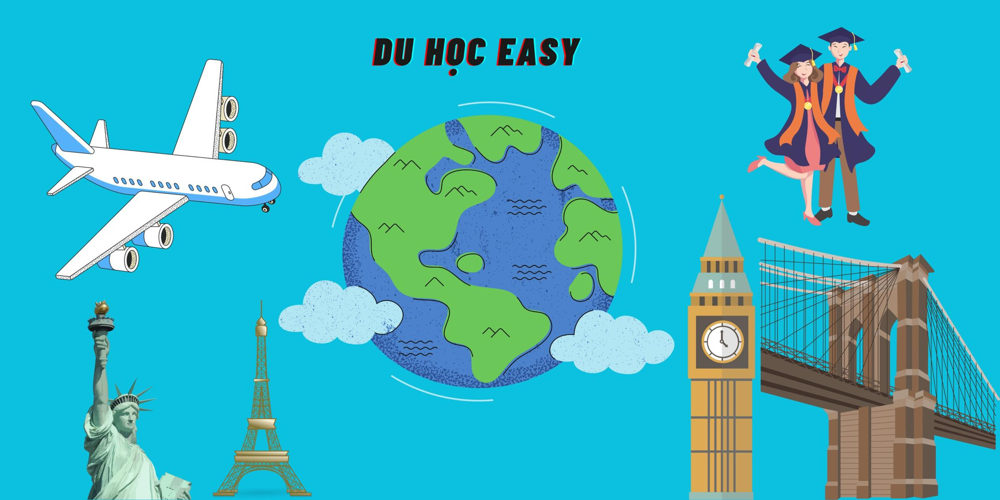

Chào mừng đến với Hà Lan!
Hà Lan là một quốc gia nổi tiếng với hệ thống giáo dục đại học chất lượng cao và đa dạng. Có nhiều trường
đại học danh tiếng như University of Amsterdam, Delft University of Technology, và Utrecht University. Hệ
thống giáo dục ở Hà Lan đặc trưng bởi sự tập trung vào sự độc lập và khuyến khích học sinh tham gia vào quá
trình học tập và nghiên cứu.
Điều kiện sống
Hà Lan được biết đến là một quốc gia có chất lượng cuộc sống tốt và tiện nghi hiện đại. Các thành phố như
Amsterdam, Rotterdam và Utrecht đều có môi trường sống tốt và sự đa dạng văn hóa. Hệ thống giao thông công
cộng rất phát triển và dễ dàng di chuyển trong thành phố và giữa các thành phố. Nước Hà Lan cũng có nền y tế
chất lượng cao và hệ thống chăm sóc y tế cơ bản được đảm bảo cho mọi người.
Thời tiết
Thời tiết ở Hà Lan có khí hậu biển ảnh hưởng bởi dòng sông biển và gió biển. Dưới đây là mô tả thời tiết
chung:
Mùa đông (tháng 12 - 2): Mùa đông ở Hà Lan thường lạnh và ẩm. Nhiệt độ thường dao động từ 0-5°C.
Mùa xuân (tháng 3 - 5): Mùa xuân mang đến thời tiết ấm áp hơn và cảnh quan tươi mới với hoa nở khắp nơi.
Mùa hè (tháng 6 - 8): Mùa hè ở Hà Lan ấm áp và khá mát mẻ. Nhiệt độ thường từ 20-25°C. Đây là thời gian tốt
để tham gia các hoạt động ngoài trời.
Mùa thu (tháng 9 - 11): Mùa thu thường mát mẻ và dễ chịu. Nhiệt độ có thể từ 10-15°C và thời tiết bắt đầu
mát mẻ hơn.
Thủ tục Visa
Visa du học Hà Lan:
Visa du học Hà Lan được gọi là "Study Visa" hoặc "Type D Visa". Đây là loại visa dành cho những người muốn
du học tại các trường đại học hoặc cơ sở giáo dục tại Hà Lan.
Cách xin Study Visa từ Việt Nam:
Dưới đây là quy trình cơ bản để xin Study Visa du học Hà Lan từ Việt Nam:
Nhận thư tuyển sinh: Đầu tiên, bạn cần nhận thư tuyển sinh hoặc giấy chứng nhận đăng ký từ trường đại học
hoặc cơ sở giáo dục tại Hà Lan mà bạn đã đăng ký.
Đăng ký trực tuyến: Để xin visa, bạn cần đăng ký trực tuyến qua hệ thống đăng ký visa trực tuyến của Đại sứ
quán Hà Lan tại Việt Nam. Sau đó, bạn cần điền thông tin và nộp đơn trực tuyến.
Nộp hồ sơ và tài liệu: Sau khi hoàn thành đơn đăng ký trực tuyến, bạn cần nộp hồ sơ và các tài liệu cần
thiết tại Trung tâm dịch vụ visa của Đại sứ quán Hà Lan tại Việt Nam. Tài liệu này bao gồm đơn đăng ký visa,
thư tuyển sinh hoặc giấy chứng nhận đăng ký từ trường, bảng điểm, chứng minh tài chính, bảo hiểm sức khỏe,
và các tài liệu khác.
Thẩm định hồ sơ: Hồ sơ của bạn sẽ được thẩm định bởi cơ quan chức năng tại Đại sứ quán Hà Lan. Thời gian xử
lý có thể mất một thời gian và bạn cần tuân thủ các hướng dẫn cụ thể từ cơ quan này.
Phỏng vấn (nếu cần): Trong một số trường hợp, bạn có thể được yêu cầu tham gia phỏng vấn tại Đại sứ quán Hà
Lan để giải thích về mục đích và kế hoạch học tập.
Nhận visa: Sau khi hồ sơ được xem xét và duyệt, bạn sẽ nhận được Study Visa Hà Lan. Thời gian xử lý có thể
từ vài tuần đến một tháng.
Lưu ý quan trọng:
Hãy kiểm tra trang web chính thức của Đại sứ quán Hà Lan tại Việt Nam để biết thông tin mới nhất về thủ tục
xin visa và yêu cầu nộp đơn.
Hãy tuân thủ thời hạn và quy định của đại sứ quán trong quá trình nộp đơn visa.
Đảm bảo bạn đã chuẩn bị đầy đủ tài liệu yêu cầu và thông tin cần thiết cho việc nộp đơn.
Các trường Đại học
1. Utrecht University
Đại học Utrecht được thành lập vào năm 1636 đây được đánh giá là một trong những trường lâu đời, lớn bậc nhất Hà
Lan. Trường cung cấp đa dạng các chương trình học với nhiều cấp độ khác nhau gồm 138 chương trình học cấp bằng
sau đại học, 50 chương trình cấp bằng cử nhân, hơn 32 chuyên ngành đào tạo.
Sinh viên học tập tại đây được linh hoạt chọn các lĩnh vực học mà mình yêu thích. Đặc biệt tất cả các chương
trình của trường được cấp bằng và công nhận bởi tổ chức Dutch – Flemish Accreditation.
Theo thống kê mới nhất của Topumiversities có 31.925 sinh viên đang theo học tại trường. Trong đó có 30* sinh
viên sau đại học, 62% sinh viên cử nhân. Tổng cộng có 2.151 sinh viên quốc tế, trong đó có 64% sinh viên sau đại
học, 36% sinh viên cử nhân.
Utrecht một trong những trường đại học hàng đầu Hà Lan đứng hạng 44 ngành khoa học đời sống và y khoa, hạng 5 về
ngành khoa học thú y theo xếp hạng các trường đại học thế giới QS. Trường đã chứng minh được nền tảng giáo dục
chất lượng cao và sáng tạo. Trường có tới 900 chương trình được giảng dạy tiếng Anh và đây là cái nôi đào tạo ra
12 ứng viên đạt giải nobel, 19 giải Spinoza.
Yêu cầu đầu vào:
Bằng tốt nghiệp đại học.
Chứng chỉ tiếng Anh IELTS đạt 6.0 trở lên, TOEFL IBT ít nhất 83.
2. Amsterdam University
Đại học Amsterdam là một trong những trường đại học tốt nhất tại Hà Lan. Trường được thành lập vào năm 1631 bởi
chính quyền địa phương sau đó đổi tên theo thành phố Amsterdam.
Đây là một trong những trường đại học nghiên cứu lớn nhất tại Châu Âu với lịch sử lâu đời thứ ba ở Hà Lan với
4794 nhân viên, 31186 sinh viên. 1340 sinh viên trình độ tiến sĩ. Ngân sách của trường mỗi năm lên đến 600 triệu
euro với khuôn viên chính nằm tại Amsterdam và một số khoa khác ở các khu vực lân cận.
Trường sở hữu 7 khoa chính gồm khoa học xã hội và hành vi, nhân văn, kinh doanh và kinh tế, luật, khoa học, nha
khoa và y khoa.
Đại học Amsterdam sở hữu hệ thống thư viện lớn với gần 4 triệu đầu sách và những bộ sưu tập đặc biệt của thư
tín, viết tay hay bản đồ hiếm có mang giá trị cao. Phòng đọc và thư viện của trường có sức chứa lên đến 2.600
với hơn 1.100 chỗ được trang bị máy tính có kết nối internet. Ngoài ra Amsterdam cũng có nhiều hoạt động văn
hóa, thể thao luôn được tổ chức nhằm khuyến khích sự năng động của giảng viên và sinh viên.
Theo xếp hạng của QS World University trường Amsterdam được đánh giá nằm trong 100 trường đại học tốt nhất thế
giới. Trường đặc biệt xếp hạng cao về các ngành nhân văn, nghệ thuật và khoa học xã hội. Trường thực hiện nghiên
cứu trong khoảng 20 lĩnh vực bao gồm sức khỏe toàn cầu và phát triển, di sản văn hóa và bản sắc, vấn đề lượng từ
và thông tin lượng từ.
Yêu cầu:
Hoàn thành chương trình lớp 12 tại Việt Nam với GPA 7.0.
IELTS 5.0 hoặc trình độ tương đương.
3. Delft University of Technology
Đại học Công nghệ Delft với hơn 170 năm kinh nghiệm là trường đại học kỹ thuật công lập lớn nhất tại Hà Lan. Du
học Hà Lan chọn trường nào, đây là cái tên không thể bỏ qua. Trường được thành lập năm 1842 tại tỉnh Zuid –
Holland, thành phố Delft, Hà Lan, nằm giữa hai thành phố Den Haag và Rotterdam.
Hiện tại Delft có khoảng 16.000 sinh viên theo học và một phần tư trong số đó là sinh viên quốc tế. Tất cả các
chương trình thạc sĩ và hai trong số chương trình cử nhân của trường được dạy bằng tiếng Anh. 60% sinh viên tiến
sĩ và 30% sinh viên bậc thạc sĩ của trường là người nước ngoài.
Điều kiện nhập học:
Tốt nghiệp đại học loại khóa với điểm trung bình từ 7.5 trở lên.
IELTS 6.0 hoặc TOEFL 550 trở lên.
Ngoài ra có một số ngành yêu cầu thêm chứng chỉ GRE.
4. Wageningen University
Wageningen một trong những trường đại học tốt nhất Hà Lan cho những sinh viên muốn theo học lĩnh vực khoa học xã
hội và khoa học đời sống.
Trường được thành lập vào năm 1918 là một trong những trường nghiên cứu lâu đời với chất lượng giáo dục hàng
đầu.
Trường có khoảng 10.000 sinh viên đến từ 100 quốc gia khác nhau đang nghiên cứu học tập dưới sự giảng dạy của
6.500 giảng viên giàu kinh nghiệm.
Tỉ lệ giáo viên luôn được giữ ở mức 1:15 nên sinh viên luôn nhận được sự quan tâm tận tình của đội ngũ giảng
dạy.
Trường có 29 chương trình thạc sĩ cùng các ngành liên quan đến lĩnh vực khoa học đời sống. Đặc biệt đa số các
chương trình cử nhân đều được dạy bằng tiếng Hà Lan và một phần bằng tiếng Anh.
Ngoại lệ có khoảng 40 khóa học cao học và đại học được dạy hoàn toàn bằng tiếng Anh. Bên cạnh đó trường còn là
một trong những cơ sở có chỉ số xuất bản toàn cầu cao, đặc biệt ở các đề tài nông nghiệp, thực phẩm, vật nuôi và
môi trường.
Ngoài ra, trường còn đặt quan hệ với nhiều tổ chức, doanh nghiệp trong ngoài nước từ đây mang đến cho sinh viên
cơ hội việc làm cao.
Theo bình chọn của tạp chí Times Higher Education năm 20016 trường xếp 14 trong 100 trường đại học tốt nhất Châu
Âu.
Yêu cầu nhập học:
Bậc cử nhân: Tốt nghiệp THPT, có IELTS 6.0 trở lên.
Bậc thạc sĩ: Tốt nghiệp ĐH chuyên ngành liên quan, có IELTS 6.0 hoặc 6.5 tùy ngành.
5. Leiden University
Đại học Leiden là trường đại học lâu đời nhất ở Hà Lan, thành lập năm 1575 bởi William of Orange. Trường nằm ở
thành phố Leiden với một trường đại học danh dự quốc tế có trụ sở tại The Hague.
Trong suốt chiều dài lịch sử, trường đã hoạt động tự do và phương châm của trường là Praesidium Libertatis, dịch
là ‘pháo đài của tự do’,do người sáng lập đại học Leiden công nhận sức mạnh của thành phố khi chống lại những kẻ
xâm lược Tây Ban Nha.
Hiện tại Leiden là viết tắt của sự toàn diện và đa dạng. Trường bao gồm 7 khoa của nghệ thuật, khoa học và khoa
học xã hội, nơi có 26.000 sinh viên đến từ 100 quốc gia khác nhau và mô tả mình là “một nơi ẩn náu, nơi bất kỳ
câu hỏi nào cũng có thể được hỏi và trả lời hoàn toàn tự do.
Trường sở hữu 7 khoa trực thuộc về các lĩnh vực Nghệ thuật, khoa học, xã hội tọa lạc tại hai thành phố lớn là
Hague và Leiden.
Đại học Leiden có một viện danh dự và một trường giảng dạy cao học. Trường cung cấp cho sinh viên 73 chương
trình thạc sĩ và tiến sĩ, 46 chương trình cử nhân với các khóa học liên ngành và các chương trình đào tạo đa
dạng.
Đây là một trong những thành viên liên đoàn của trường đại học nghiên cứu Châu Âu – hiệp hội các trường đại học
nghiên cứu xuất sắc ở Châu Âu. Đại học Leiden đã thực hiện tham gia vào Leiden Golbal nhằm trao đổi kiến thức
giáo dục, khoa học trong lĩnh vực nghiên cứu khu vực và toàn cầu.
Đồng thời trường có liên kết với các đối tác khác như khu nghiên cứu khoa sinh học Leiden với hơn 70 doanh
nghiệp.
Đại học Leiden được xếp hạng cao nhất tại châu Âu về Văn học, nghệ thuật theo đánh giá của Time Higher Education
World University Rankings. Xếp hạng 28 cho những trường đại học tốt nhất thế giới và đứng thứ 61 cho danh tiếng
quốc tế.
Trường luôn nỗ lực nhằm mang đến cho giảng viên, cùng sinh viên một môi trường làm việc, học tập tốt nhất.
Điều kiện đầu vào:
Tốt nghiệp THPT cho bậc cử nhân và tốt nghiệp cử nhân cho bậc đại học
có IELTS đạt 6.0 trở lên
6. Erasmus University Rotterdam
Được thành lập vào năm 1913 từ khi ra đời cho đến nay trường vẫn luôn là một trong những trường đại học tốt nhất
tại Hà Lan. Trường hiện có khoảng 29.000 sinh viên đang theo học với 1.400 cộng đồng nghiên cứu.
Erasmus Rotterdam sở hữu đội ngũ giảng viên là các học giả nghiên cứu giàu kinh nghiệm và ban quản trị tài năng
với những kế hoạch phát triển dài lâu. Bên cạnh đó, trường còn là một phần trong hệ thống đối tác học thuật rộng
lớn.
Trung tâm đại học Erasmus Rotterdam nằm tại Woudestein cách trung tâm Rotterdam chừng 15 phút đi xe đạp. Đây
được đánh giá là một nơi năng động và sầm uất nên việc đi lại thuận lợi.
Khắp trường có nhiều hệ thống máy ATM của nhiều ngân hàng lớn tại ATM.Cả khuôn viên trường được xem như là một
khu phố sinh viên thu nhỏ, bạn sẽ dễ dàng tìm thấy các tiệm bánh, quán cafe, nhà gym …
Đặc biệt đồ uống và thực phẩm cho sinh viên đều được nhà trường kiểm duyệt nhằm đảm bảo độ dinh dưỡng cao. Thư
viện trường là một điểm đến lý tưởng để sinh viên tập trung nguyên cứu. Ở đây sở hữu nhiều đầu sách chuyên sâu
về các lĩnh vực y học, kinh tế, xã hội học …
Thêm nữa sinh viên cũng có thể tự tìm hiểu các tài liệu đến từ một số trường của Mỹ và các trường danh giá
Oxford.
Trường có đa dạng các chương trình giảng dạy, nghiên cứu cho sinh viên chọn lựa. Tất cả các khóa học tại đây đều
được công nhận bởi nhiều tổ chức học thuật uy tín trên thế giới như NVAO, ACCSB…
Yêu cầu đầu vào:
Chương trình cử nhân: Người học đã tốt nghiệp THPT hoặc đang là sinh viên, tùy một số ngành có yêu cầu SAT, điểm
IELTS 6.0 đến 7.0.
Chương trình thạc sĩ: Đã tốt nghiệp đại học chuyên ngành phù hợp GPA từ 7.0 trở lên, điểm IELTS từ 6.5 trở lên.
7. University of Groningen
Đại học Groningen ngôi trường cổ kính thứ 2 trên nước Hà Lan. Trường tọa lạc tại thành phố Groningen, thành lập
năm 1614. Đến với University of Groningen sinh viên sẽ được tận hưởng môi trường học tập xuất sắc, nền giáo dục
chất lượng cao, đời sống sinh viên sôi nổi.
Trường được bình chọn trong top 100 trường đại học chất lượng bậc nhất thế giới theo đánh giá của ARWU.
Groningen là một thành viên của nhóm Excellence Group của các trường đại học tốt nhất châu Âu.
Bên cạnh đó đây cũng là trường nằm trong top 3 trường đại học nghiên cứu châu Âu trong các lĩnh vực Khoa học vật
liệu, sinh thái học, thiên văn học và hóa học.
Trường cung cấp cho sinh viên nhiều chương trình đào tạo với đa dạng sự chọn lựa có 9 khoa, 27 trung tâm nghiên
cứu, 9 trường và hơn 175 chương trình đào tạo được cấp bằng.
Yêu cầu đầu vào:
Bậc cử nhân: IELTS 6.5
Cao học: IELTS 6.5 đến 7.0 tùy khóa học
8. Maastricht University
Đại học Maastricht (UM) là một trường đại học quốc tế ở Maastricht, một trong những thành phố cổ nhất và đẹp
nhất của Hà Lan.
Thành phố này được biết đến với Hiệp ước Maastricht thành lập Liên minh châu Âu vào năm 1992. Trường nổi bật bởi
các tòa nhà nằm khắp những nơi đẹp nhất của trung tâm thành phố và các khoa y học của trường nằm ở Randwyck
Đại học Maastricht nổi tiếng về:
• Đổi mới giáo dục – UM tập trung về giáo dục và nghiên cứu cách để mọi người học tốt hơn, gồm việc sử dụng rộng
rãi Problem-Based Learning.
• Định hướng quốc tế mạnh mẽ, cùng với một cam kết vững chắc cho sự phát triển kinh tế, khoa học và xã hội của
khu vực Maas-Rhine (EU).
• Một cách tiếp cận đa ngành về giáo dục và nghiên cứu.
Trường có 6 khoa chính là y khoa và khoa học đời sống, sức khỏe, tâm lý, khoa luật gồm luật quốc tế và luật châu
âu, khoa kinh tế và quản trị kinh doanh, khoa văn hóa và khoa học xã hội, khoa học xã hội.
Trường có 43 khóa thạc sĩ, 17 khóa cử nhân và 21 khóa tiến sĩ. Phần lớn tất cả các khóa học tại đây đều được dạy
bằng tiếng Anh.
Tất cả các chương trình đào tạo của trường đều được chứng nhận bởi NVAO một tổ chức uy tín đánh giá các chương
trình nghiên cứu, đào tạo của Hà Lan.
Thêm vào đó Maastricht còn thường xuyên có nhiều học bổng động viên, hỗ trợ và khuyến khích phong trào học tập
của sinh viên.
Học tập tại đây sinh viên luôn được phát triển một cách toàn diện với môi trường học tập quốc tế được đảm bảo
Điều kiện đầu vào:
Đại học: IELTS 6.0
Cao học: IELTS 6.5
Chính sách Học bổng
Chính sách học bổng đại học ở Hà Lan:
Hà Lan cung cấp nhiều học bổng hấp dẫn cho học sinh quốc tế, giúp hỗ trợ học phí và chi phí sống khi du học
tại đây. Dưới đây là một số loại học bổng phổ biến mà bạn có thể xem xét:
Học bổng từ các trường đại học: Nhiều trường đại học ở Hà Lan cung cấp các loại học bổng cho học sinh quốc
tế. Học bổng có thể bao gồm học phí toàn phần, bán phần hoặc hỗ trợ sinh hoạt. Thông tin về học bổng từ các
trường đại học thường được công bố trên trang web của trường.
Học bổng từ chính phủ Hà Lan: Chính phủ Hà Lan cũng cung cấp nhiều loại học bổng cho học sinh quốc tế thông
qua tổ chức Nuffic. Một trong những học bổng phổ biến là học bổng Orange Knowledge Program (OKP) dành cho
những người có nguyện vọng cải thiện tri thức và kỹ năng của họ tại Hà Lan.
Học bổng từ tổ chức phi chính phủ: Các tổ chức phi chính phủ và tổ chức quốc tế khác cũng cung cấp học bổng
cho học sinh quốc tế tại Hà Lan. Điều này có thể bao gồm các chương trình học bổng từ các tổ chức phi lợi
nhuận, tổ chức nghiên cứu, và tổ chức từ thiện.
Học bổng từ các tổ chức thương mại và doanh nghiệp: Một số công ty và tổ chức thương mại có thể cung cấp học
bổng cho học sinh quốc tế, đặc biệt là cho các ngành học liên quan đến lĩnh vực hoạt động của họ.
Cách nộp đơn học bổng:
Đọc kỹ thông tin về học bổng: Trước khi nộp đơn, bạn nên đọc kỹ thông tin về học bổng, bao gồm tiêu chí, yêu
cầu, thời hạn và các điều kiện cụ thể.
Chuẩn bị tài liệu: Chuẩn bị đầy đủ tài liệu yêu cầu, bao gồm đơn đăng ký học bổng, bảng điểm, thư giới
thiệu, và các tài liệu khác mà học bổng yêu cầu.
Nộp đơn đúng hạn: Luôn tuân thủ thời hạn nộp đơn học bổng.
Tuân thủ hướng dẫn: Nộp đơn theo hướng dẫn cụ thể từ trường hoặc tổ chức cấp học bổng.
Giới thiệu thông tin nhóm xây dựng trang web
Xin chào các bạn! Nhóm mình là nhóm VoF - Vision of Future, chủ quản của trang web này. Chúng mình cùng nhau
tạo ra trang web này nhằm mục đích cung cấp thông tin để giúp đỡ một phần nào đó cho các bạn sinh viên hay
những công dân có nhu cầu đi du học hay định cư ở nước ngoài. Rất mong nhận được sự giúp đỡ của tất cả mọi
người!